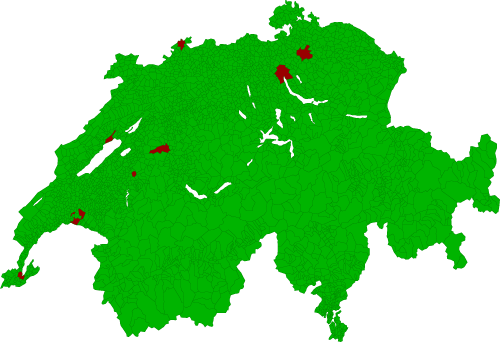
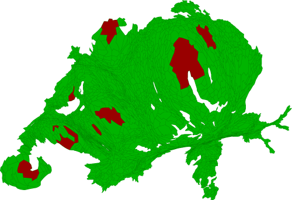

ScapeToad: an example of use
The visualization of social phenomena through classical thematic mapping often leads to unsatisfying representations. Classical political referendum maps, for instance, lead to an underestimation of the opinions expressed by populations of large urban agglomerations. Classical maps of GDPs, electoral votes, religious beliefs, or revenue classes give a distorted image of the world by linking the relative importance of quantitative and qualitative values of such variables to the Euclidian topographical extent of the statistical areas where these values are measured.
Cartograms are a well-known technique used to compensate for this inconvenience by breaking the link between statistical regions and their topographical areas. Consequently, this liberates one visual variable (that of polygon size) for a more relevant use, such as the representation of the relative social importance of these regions (usually measured by the size of their populations), while leaving intact their topological relations.
Imagine you want to know the opinion of the Swiss population on some societal subject. You submit a "yes or no" question to vote and get the following results, which you represent in a choroplethe map (red for "no" and green for "yes"). If you use topographic metrics, you will get the map bellow. Visually, the "no" answer is only residual:.

Now, adapt the surface areas to population sizes. This adaptation will lead to a much more correct estimation of the actual proportion of "yes" and "no" answers:
